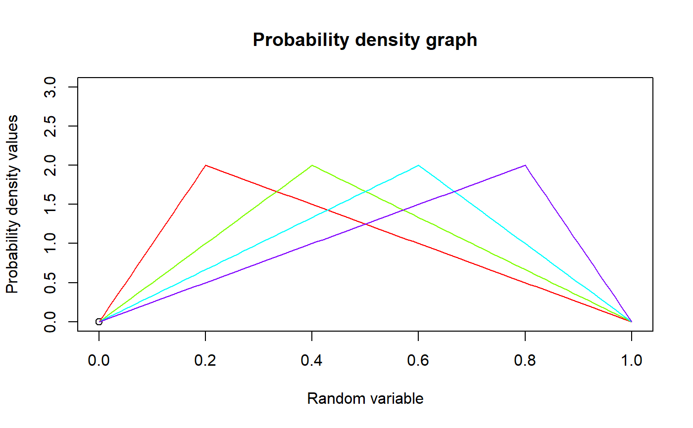

These functions provide the ability for generating probability density values, cumulative probability density values and moments about zero values for the Triangular Distribution bounded between [0,1].
mazTRI(r,mode)
Arguments
| r | vector of moments. |
|---|---|
| mode | single value for mode. |
Value
The output of mazTRI give the moments about zero in vector form.
Details
Setting \(min=0\) and \(max=1\) \(mode=c\) in the Triangular distribution a unit bounded Triangular distribution can be obtained. The probability density function and cumulative density function of a unit bounded Triangular distribution with random variable P are given by
$$g_{P}(p)= \frac{2p}{c} $$ ; \(0 \le p < c\) $$g_{P}(p)= \frac{2(1-p)}{(1-c)} $$ ; \(c \le p \le 1\) $$G_{P}(p)= \frac{p^2}{c} $$ ; \(0 \le p < c\) $$G_{P}(p)= 1-\frac{(1-p)^2}{(1-c)} $$ ; \(c \le p \le 1\) $$0 \le mode=c \le 1$$
The mean and the variance are denoted by $$E[P]= \frac{(a+b+c)}{3}= \frac{(1+c)}{3} $$ $$var[P]= \frac{a^2+b^2+c^2-ab-ac-bc}{18}= \frac{(1+c^2-c)}{18} $$
Moments about zero is denoted as $$E[P^r]= \frac{2c^{r+2}}{c(r+2)}+\frac{2(1-c^{r+1})}{(1-c)(r+1)}+\frac{2(c^{r+2}-1)}{(1-c)(r+2)} $$ \(r = 1,2,3,...\)
NOTE : If input parameters are not in given domain conditions necessary error messages will be provided to go further.
References
Horsnell, G. (1957). Economic acceptance sampling schemes. Journal of the Royal Statistical Society, Series A, 120:148-191.
Johnson, N. L., Kotz, S. and Balakrishnan, N. (1994) Continuous Univariate Distributions, Vol. 2, Wiley Series in Probability and Mathematical Statistics, Wiley.
Karlis, D. & Xekalaki, E., 2008. The Polygonal Distribution. In Advances in Mathematical and Statistical Modeling. Boston: Birkhuser Boston, pp. 21-33.
Available at: http://dx.doi.org/10.1007/978-0-8176-4626-4_2.
Okagbue, H. et al., 2014. Using the Average of the Extreme Values of a Triangular Distribution for a Transformation, and Its Approximant via the Continuous Uniform Distribution. British Journal of Mathematics & Computer Science, 4(24), pp.3497-3507.
Available at: http://www.sciencedomain.org/abstract.php?iid=699&id=6&aid=6427 .
See also
Examples
#plotting the random variables and probability values col<-rainbow(4) x<-seq(0.2,0.8,by=0.2) plot(0,0,main="Probability density graph",xlab="Random variable", ylab="Probability density values",xlim = c(0,1),ylim = c(0,3))#> [1] 0.0000000 0.3333333 0.6666667 1.0000000 1.3333333 1.6666667 2.0000000 #> [8] 1.8571429 1.7142857 1.5714286 1.4285714 1.2857143 1.1428571 1.0000000 #> [15] 0.8571429 0.7142857 0.5714286 0.4285714 0.2857143 0.1428571 0.0000000#> [1] 0.4333333#> [1] 0.04388889#plotting the random variables and cumulative probability values col<-rainbow(4) x<-seq(0.2,0.8,by=0.2) plot(0,0,main="Cumulative density graph",xlab="Random variable", ylab="Cumulative density values",xlim = c(0,1),ylim = c(0,1))#> [1] 0.000000000 0.008333333 0.033333333 0.075000000 0.133333333 0.208333333 #> [7] 0.300000000 0.396428571 0.485714286 0.567857143 0.642857143 0.710714286 #> [13] 0.771428571 0.825000000 0.871428571 0.910714286 0.942857143 0.967857143 #> [19] 0.985714286 0.996428571 1.000000000mazTRI(1.4,.3) #acquiring the moment about zero values#> [1] 0.4333333mazTRI(2,.3)-mazTRI(1,.3)^2 #variance for when is mode 0.3#> [1] 0.04388889#only the integer value of moments is taken here because moments cannot be decimal mazTRI(1.9,0.5)#> [1] 0.5